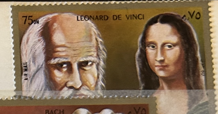
| SOURCE | TITLE| IMAGE MATCH | click to source page |
| eBay | Sharjah Art Famous Renaissance Painter Leonardo Da Vinci Mona Lisa stamp 1969 | eBay | 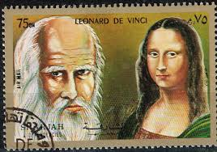 |
| Meditative Philately | Isaac Newton Astronomer Physicist Souvenir Sheet Mint NH – Meditative Philately | 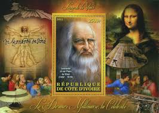 |
| Yahoo! JAPAN | Yahoo!オークション -「モナリザ切手」(アンティーク、コレクション) の落札相場・落札価格 | 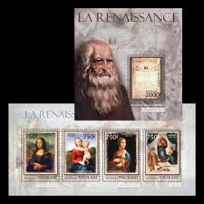 |
| Stamps-world.eu | Stamps Leonardo da Vinci | 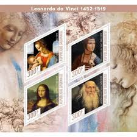 |
| eBay | Da Vinci | eBay | 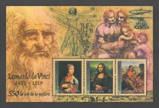 |
| eBay | Stamps.Art, Leonardo Da Vinci 1+1 sheets perforated NEW 2024 year | eBay | 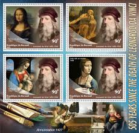 |
| torob.com | خرید و قیمت شیت تمبر شخصیت داوینچی مونالیزا ، کلونی فرانسه | ترب | 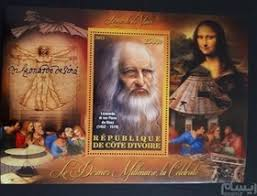 |
| Bunjang Global | Reserved for ㅇㅇ) France 1978 100 Francs, Test Note (Cleopatra) on Bunjang Global Site. | 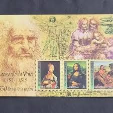 |
| Stamps-world.eu | Stamps Art Leonardo da Vinci | 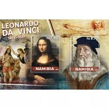 |
| eBay | Mini Sheet 2015 Leonardo da Vinci Astronomer Physicist Engineer | eBay | 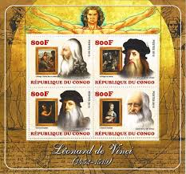 |
| HipStamp | Leonardo Da Vinci Painting Art Souvenir Sheet of 4 Stamps Mint NH | Worldwide - Other, Stamp / HipStamp | 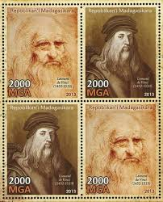 |
| Wikibooks | World Stamp Catalogue/Moldova/2002 - Wikibooks, open books for an open world | 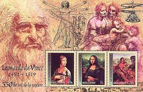 |
| eBay UK | TOGO 2013 RENAISSANCE ART LEONARDO DAVINCI SOUVENIR SHEET MINT FDC | eBay UK | 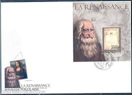 |
| eBay | MOLDOVA 2002 Art Paintings Artist Painter Leonardo da Vinchi 550th Birth Ann s-s | eBay | 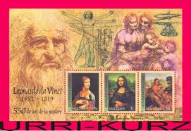 |
| eBay | North Macedonia/2002/M/S/The 550 Anniversary of the birth of Leonardo da Vinci | eBay | 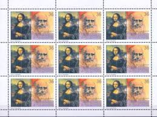 |
| eBay | Stamps.Art, Leonardo Da Vinci 8 sheets perforated NEW 2020 year | eBay | 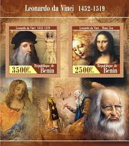 |
| 10 Intriguing Facts About Famous Paintings | 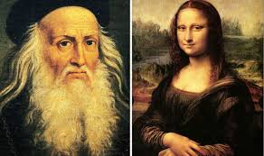 | |
| eBay | Upper Yafa Strip & S/S Paintings Leonardo da Vinci Louvre 1967 MNH-9 Euro | eBay | 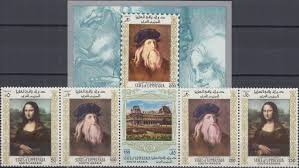 |
| Meditative Philately | Leonardo Da Vinci Painting Art Souvenir Sheet of 4 Stamps Mint NH – Meditative Philately | 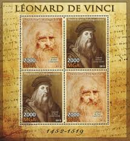 |
| eBay | MOLDOVA 2019 Famous People Italy Scientist Inventor Artist Leonardo Da Vinci 1v+ | eBay | 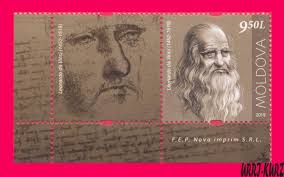 |
| Daily Express | Leonardo da Vinci news: Why hidden hairpin could redefine Mona Lisa painting | World | News | Express.co.uk | 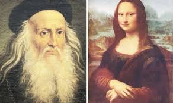 |
| eBay | Moldova Art Leonardo Da Vinci Famous Paintings Souvenir Sheet 2002 MNH A-5a | eBay | 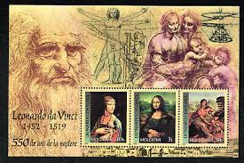 |
| Acta Scientific | Anatomical Drawings of Leonardo Da Vinci in Reflection of a Series of Collectibles | 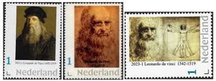 |
| Shutterstock | 3+ Hundred Da Vinci Stamp Royalty-Free Images, Stock Photos & Pictures | Shutterstock | 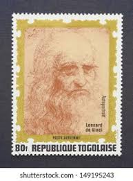 |
| Discover 9 U F O,, ,,,in art and other areas and ancient aliens ideas | ufo, ancient astronaut, ufo art and more | 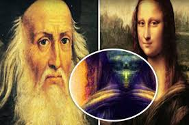 | |
| eBay | Leonardo Da Vinci /Paintings - Michel: 3682-3685 - stamps Niger - MNH** G115 | eBay | 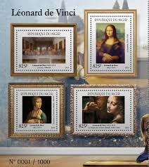 |
| Charlie Bailey (cbseven) - Profile | Pinterest | 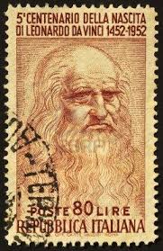 | |
| HipStamp | Leonardo Da Vinci Painting Art Souvenir Sheet of 4 Stamps Mint NH | Worldwide - Other, Stamp / HipStamp | 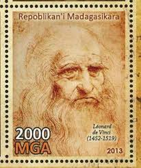 |
| Discover 40 dubai postage stamps and postage stamps ideas | dubai, stamp, postal stamps and more | 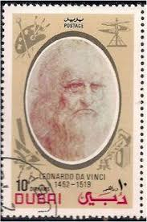 | |
| eBay | Leonardo da Vinci Paintings Art MNH Stamps 2024 Sierra Leone M/S + 2 S/S | eBay | 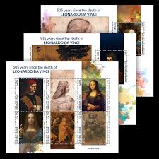 |
| Stamps-world.eu | Stamps Painting Leonardo da Vinci | 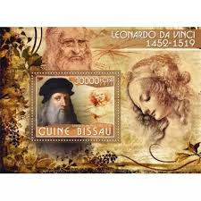 |
| eBay UK | TG675 2013 TOGO ART PAINTINGS RENAISSANCE DA VINCI RAPHAEL MONA LISA KB+BL MNH | eBay UK | 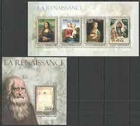 |
| Mona Lisa and Leonardo da Vinci. Florence 1504. CTTO | 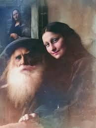 | |
| eBay | Stamps.Art, Leonardo Da Vinci 8 sheets perforated NEW 2024 year | eBay | 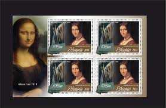 |
| eBay | MOLDOVA 2019 Famous People Italy Scientist Inventor Artist Leonardo Da Vinci 1v | eBay | 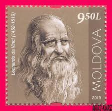 |
| Getty Images | 68 Chocolate Poulain Photos & High Res Pictures - Getty Images | 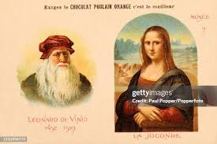 |
| eBay | PK23326/ MADAGASCAR – LEONARD DE VINCI – 2013 MINT MNH BLOCKS SELECTION | eBay | 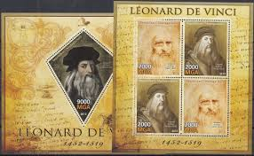 |
| Latinafy | Bloco De Selo - Leonardo Da Vinci | 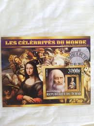 |
| eBay | PE537 2013 LEONARDO DA VINCI ART PAINTINGS KB+BL MNH STAMPS | eBay | 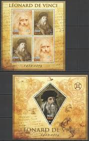 |
| eBay | Lisa | eBay | 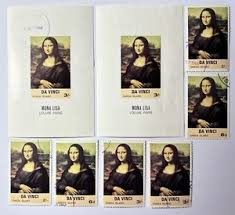 |
| Shutterstock | Chisinau Moldova October 28 2019 Stamp Stock Photo 2576071643 | Shutterstock | 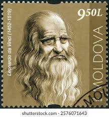 |
| YouTube | Top 10 Greatest Renaissance Artists - YouTube | 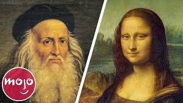 |
| Colnect | Liechtenstein: Leonardo da Vinci, 1948 : US$ 0.18 from Stampshop : Stamps Marketplace : Stamps for sale : Colnect | 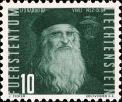 |
| springer.com | Geometrical Perspective | 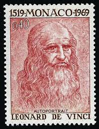 |
| eBay | 1983 Leonardo da Vinci/painter,sculptor,architect,engineer,San Marino,M.1276,MNH | eBay | 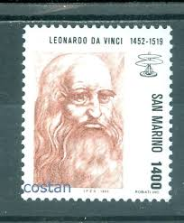 |
| BBC | Experts critiqued da Vinci's CV. They weren't impressed | 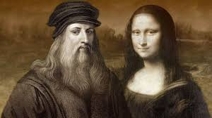 |
| 9GAG | The secret of Mona Lisa - 9GAG | 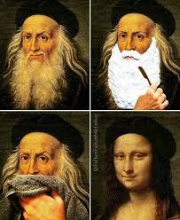 |
| TikTok | Lisa, conhecida mundialmente como Mona Lisa. Seu verdadeiro nome era L... | TikTok | 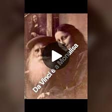 |
| WorthPoint | Mona Lisa Deutsche Bundespost Sheet Of Stamps 5 Cent Vintage 1952 Stamps | #1923911703 | 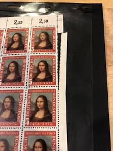 |
| Gulf News | Mona Lisa discovery: Do we have reason to smile? | |
| universelapaintings.com | UNIVERSAL PAINTINGS | |
| Freestampcatalogue.com | Stamps with the theme Leonardo Da Vinci - Freestampcatalogue.com - The free online stampcatalogue with over 500.000 stamps listed. | |
| eBay | 7. South Arabia Upper Yafa 1967 Leonardo da Vinci imperforated mnh | eBay | |
| Free stamp catalogue | Stamp 2003, Guinea Bissau Leonardo da Vinci 6v m/s, 2003 - Collecting Stamps - Freestampcatalogue.com - The free online stampcatalogue with over 500.000 stamps listed. | |
| UAportal | Skeleton of woman depicted in Mona Lisa painting discovered in Italy | |
| Rare photo of Mona Lisa, circa (1485) | ||
| 9GAG | Best Funny leonardo da vinci Memes - 9GAG | |
| TikTok | Detlef Mona Lisa | TikTok | |
| Leonardo da Vinci: Renaissance Genius and Gay Icon 🎨🔬 This 15th-century Italian wasn't just a master painter - he was an inventor, scientist, and engineer who changed the world. But did you |